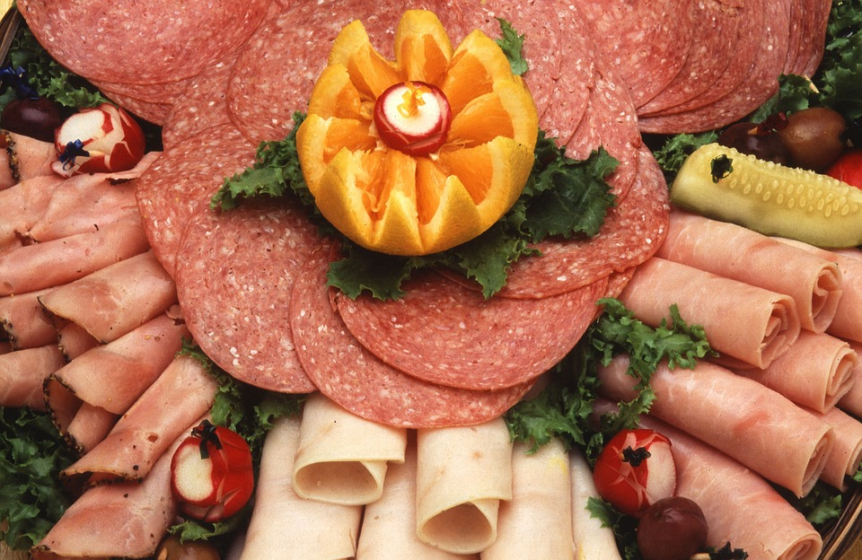
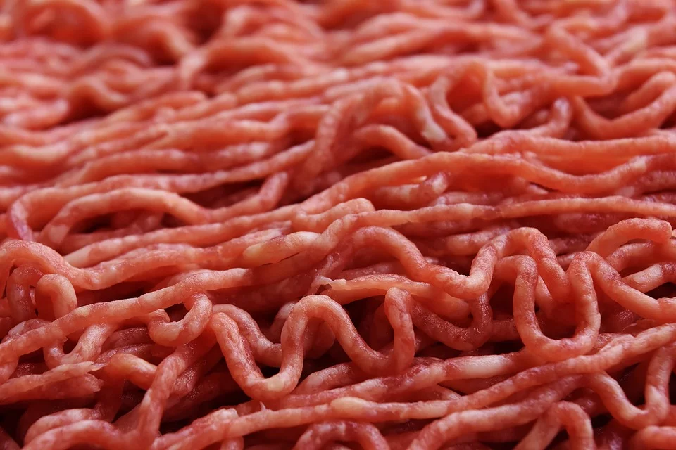
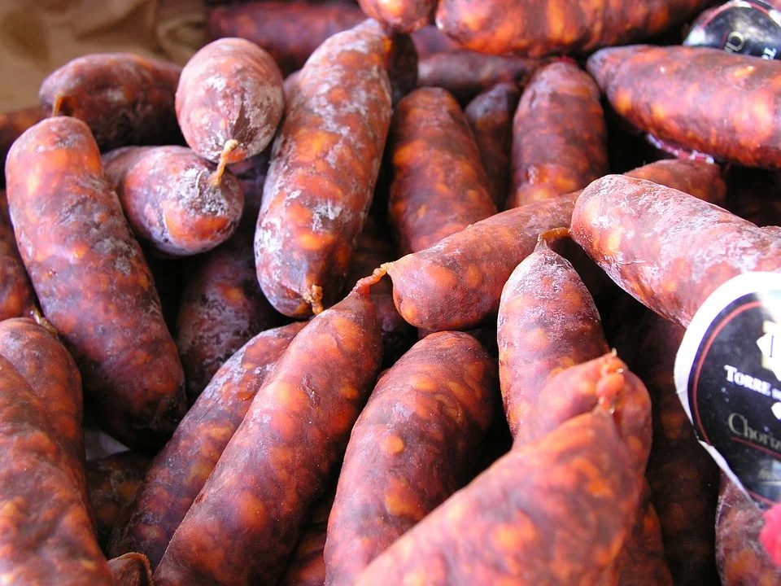
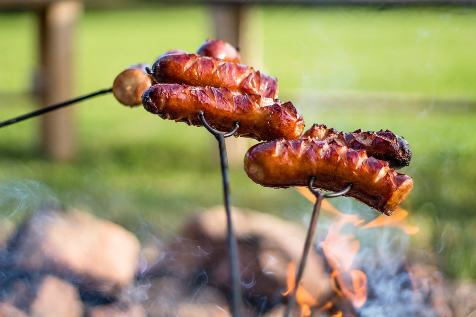
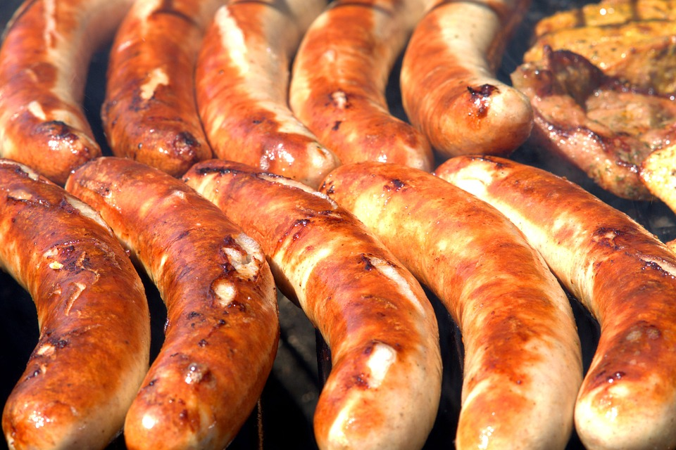
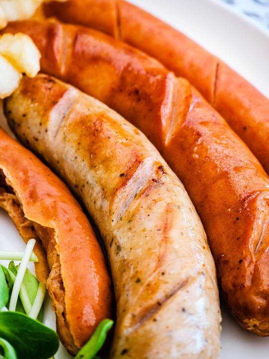

Beneficio de la carrera

El Técnico en Producción Industrial de Alimentos desarrollará las
competencias en: proceso de materias primas para la obtención de productos,
conservación de alimentos, manejo en equipos de laboratorio para identificación
y análisis de alimentos, supervisión de procedimientos alimenticios, permitiendo
así el cumplimiento de las normas de calidad, ecología y salud requeridos en la Industria
de la Transformación.
--->
Embutidos

En alimentación se denomina embutido a una pieza de carne picada y condimentada con hierbas
aromáticas y diferentes especias (pimentón, pimienta, ajos, romero, tomillo, clavo de olor,
jengibre, nuez moscada, etcétera) que es introducida ("embutida") en piel de tripas de cerdo.
La tripa natural es la auténtica creadora del gran sabor del embutido natural por sus grandes
cualidades en la curación de los embutidos. Su forma de curación ha hecho que sea fácilmente
conservable durante períodos de tiempo relativamente largos. Los embutidos se suelen vender en
carnicerías y más específicamente en charcuterías.
Embutidos crudos

Los embutidos crudos no pasan por proceso de cocción en agua pueden consumirse en estado
fresco o cocinados después de la maduración según la capacidad de conservación los embutidos
crudos pueden clasificarse en embutidos de largo media y corta duración existen diferentes
clases de embutidos crudos su diferencia se basa en las sustancias curantes y los condimentos
que se le sanciona para obtener el aroma color y sabor deseado dentro de las bases de los embutidos
crudos
Embutidos cocidos
Esta clase de embutidos se fabrica a partir de carne grasa de cerdo dice sangre y tendones
tales materias primas se someten a un tratamiento de calor antes de ser sazonadas
triturados y embutidas los embutidos cocidos se clasifican de la siguiente manera
- Embutidos de sangre como la morcilla y la moronga
- Embutido de hígado como el paté
- Embutidos de gelatina como el queso de puerco
Los embutidos cocidos son de corta duración debido a la composición de las materias
primas y su proceso de elaboración
Embutidos escaldados

Se elabora a partir de carne fresca sometida a un proceso de escaldado por poco tiempo antes
de su comercialización este tratamiento de color se aplica con el fin de disminuir el
contenido de microorganismos favoreciendo a conservación y coagulación de las proteínas
de manera que se forme una masa consistente el escaldado es un tratamiento suave con
agua caliente a 75 grados centígrados durante un tiempo que depende del embutido la
carne qué se utiliza en la elaboración debe ser de animales jóvenes y magros no debe
emplearse carne congelada o de animales viejos
Embutidos de galetina

Este embutido se prepara con partes carnosas y grasas de cabeza de cerdo los ingredientes
no se trituran sino que se prensan en un mol de la elaboración de queso de puerco consiste
en poner a hervir la cabeza tendones cartílagos y orejas limpios en una cantidad de agua
suficiente para recubrir el conjunto de todos los ingredientes se adicionan 20 gramos de
sal y 2 gramos de pimienta por kilo de cabeza y se deja hervir hasta lograr que se desprenda
la carne de los huesos
Embutidos curados

La carne de este producto se somete al curado con el fin de mejorar
su capacidad de conservar el sabor olor y consistencia del producto
las carnes curadas se preparan con una salmuera preparación de agua
sal y azúcar la concentración de sal y el azúcar disueltas en el agua
depende del producto a elaborar la salmuera en su inicio presenta un pH
5.3 hasta lograr un pH de 7 estas inyectan las piezas de carne por ejemplo
para la chuleta ahumada se inyecta hasta lograr un 10% más de su peso total
<---